Data Structures and Algorithms
with Object-Oriented Design Patterns in Java
Data Structures and Algorithms
with Object-Oriented Design Patterns in JavaConsider an arbitrary sequence 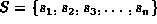 comprised of of 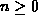 elements drawn from a some universal set U. The goal of sorting is to rearrange the elements of S to produce a new sequence, say S', in which the elements of S appear in order.
But what does it mean for the elements of S' to be in order? We shall assume that there is a relation, <, defined over the universe U. The relation < must be a total order, which is defined as follows:
Definition A total order is a relation, say <, defined on the elements of some universal set U with the following properties:
In order to sort the elements of the sequence S, we determine the permutation 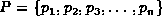 of the elements of S such that
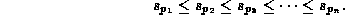
In practice, we are not interested in the permutation P, per se. Instead, our objective is to compute the sorted sequence 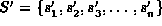 in which 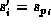 for 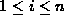.
Sometimes the sequence to be sorted, S, contains duplicates. That is, there exist values i and j, 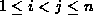, such that 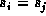. In general when a sequence that contains duplicates is sorted, there is no guarantee that the duplicated elements retain their relative positions. That is, could appear either before or after 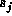 in the sorted sequence S'. If duplicates retain their relative positions in the sorted sequence the sort is said to be stable . In order for and to retain their relative order in the sorted sequence, we require that 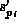 precedes 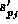 in S'. Therefore, the sort is stable if 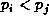.
 Copyright © 1998 by Bruno R. Preiss, P.Eng. All rights reserved.
Copyright © 1998 by Bruno R. Preiss, P.Eng. All rights reserved.